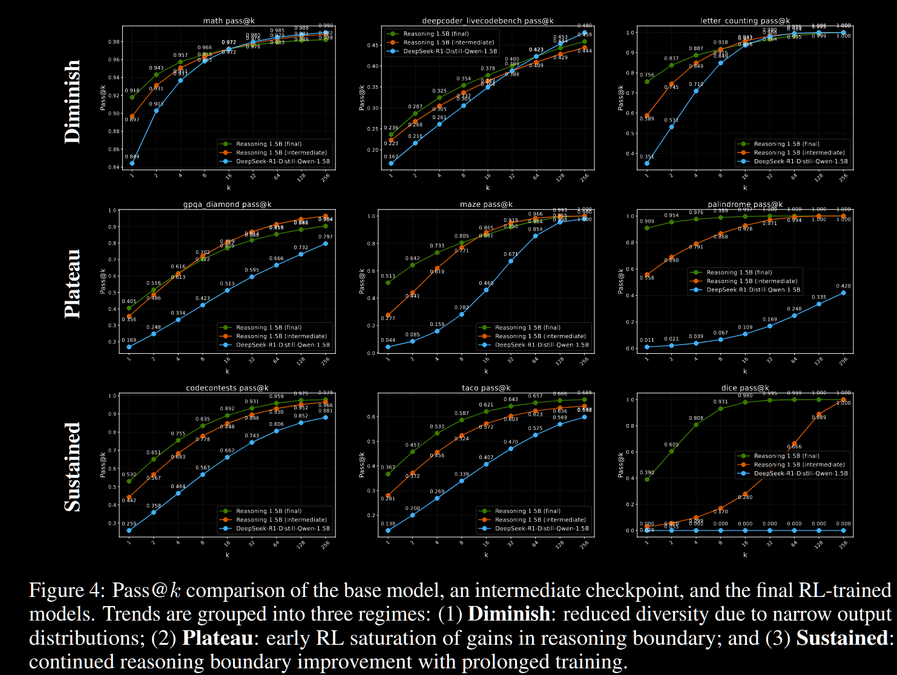

title: “LLM强化学习算法思考”
date: “2025-08-27”
### categories: [paper]
引言：LLM中的强化学习与传统RL的区别
大型语言模型（LLM）的训练范式通常包含三个核心阶段：预训练（Pre-training）、监督微调（Supervised Fine-tuning, SFT）和强化学习微调（Reinforcement Learning Fine-tuning, RLFT）。其中，RLFT阶段借鉴了强化学习的思想，但其应用方式与机器人控制或棋类游戏等传统领域中的强化学习存在显著差异。本文旨在梳理这三个阶段的目标函数，并深入探讨LLM强化学习的独特之处、最新研究发现及其对模型行为的影响。
第一阶段：预训练 (Pre-training) - 无监督的知识压缩
预训练是LLM获取世界知识和语言规律的基础。在这个阶段，模型在海量的文本数据上进行训练，其核心任务是预测下一个词元（token）。其损失函数是一个标准的交叉熵损失：
\[ L_{\text{pretrain}} = \sum_{i} -\log p(t_i | t_{<i}) \]
其中，\(t_i\) 是序列中的当前词元，\(t_{<i}\) 是其前面的所有词元。整个训练语料库中的所有词元都会被计算在内。
这个过程可以被巧妙地视为一种算术压缩。一个优秀的语言模型能够以高概率准确预测下一个词元，这意味着它捕捉到了数据中的冗余和模式。在信息论中，更可预测的事件可以用更少的比特来编码。同样，一个好的LLM相当于一个高效的数据压缩器：给定一段前文，它能以极高的压缩率（即高概率）“解压”出后续的文本。
正是基于这种联系，学术界早期就将语言模型视为“压缩器”，并使用困惑度（Perplexity, PPL） 作为衡量模型性能的关键指标。PPL可以被理解为模型在预测下一个词元时不确定性的量度，其定义为对数似然的指数：
\[ \text{PPL} = \exp\left( -\frac{1}{N} \sum_{i=1}^{N} \log p(t_i | t_{<i}) \right) \]
PPL越低，代表模型的预测越准确，不确定性越小，其对语言规律的建模能力越强，压缩效果也越好。
第二阶段：监督微调 (Supervised Fine-tuning, SFT) - 对齐特定任务
SFT阶段的目标是让模型学会遵循指令、以特定的格式进行对话或完成特定任务。它使用一个规模小得多但质量更高的“指令-回答”数据集进行训练。
尽管任务目标变了，但其底层的损失函数在形式上与预训练阶段保持一致，依然是最大化序列的对数似然：
\[ L_{\text{SFT}} = \sum_{i=|P|}^{|P|+|A|} -\log p(t_i | t_{<i}, P) \]
这里的关键区别在于，损失的计算只针对“回答”（Answer, A）部分的词元，而“指令”（Prompt, P）部分的词元则作为条件，不计入损失。这本质上是在学习一个以指令为条件的概率分布，旨在模仿高质量的范例回答。
第三阶段：强化学习微调 (Reinforcement Learning Fine-tuning, RLFT) - 超越模仿，优化偏好
RLFT阶段旨在根据人类偏好或特定标准（如事实准确性、代码正确性）来进一步优化模型，而不是简单地模仿数据集。
在LLM的强化学习框架中，各个概念的对应关系如下： * 状态 (State)：Prompt加上模型已经生成的部分词元序列 \(s_t = (P, t_1, ..., t_{t-1})\)。 * 动作 (Action)：生成下一个词元 \(a_t = t_t\)。 * 轨迹 (Trajectory)：从输入Prompt开始，到生成完整回答结束的整个词元序列。
然而，LLM的生成过程与传统RL环境有根本不同。文本生成是一个单向递增的序列，状态空间极其庞大且不存在循环。这种“非遍历性”带来了两大挑战： 1. 无法重访状态：在一个轨迹中，每个状态都是独一无二的，不可能回到之前的状态进行重新采样。 2. 信用分配难题：奖励（Reward）通常在整个序列生成完毕后才能获得（例如，判断整个回答是否有用）。传统RL中的时序差分（TD）等算法依赖于对单个状态或状态-动作对价值的精确估计，但这在LLM中难以实现。我们很难判断最终的高奖励或低惩罚应该归功或归咎于生成过程中的哪一个具体词元。
RLFT的目标函数
为了解决这些问题，当前主流的LLM强化学习算法（如PPO）采用了一种策略梯度方法，其核心思想是为每个词元的对数概率分配一个权重，这个权重反映了该词元对最终结果的贡献。简化后的损失函数可以表示为：
\[ L_{\text{RLFT}} = -\mathbb{E}_{(x,y) \sim \pi} [R(x, y) \log \pi(y|x)] \approx -\sum A(x,y) \log p(y|x) \]
这里我们暂时忽略了重要性采样、K-L散度约束等复杂项。其中，\(\log p\) 与SFT中的对数概率项一致，但它的权重不再是恒定的1，而是优势函数 (Advantage, A)。
- 当A由一个独立的Critic模型（价值模型）计算得出时，算法就演变成了PPO的形式。
- 当A由蒙特卡洛采样直接估算得出时，例如通过比较当前轨迹的奖励与一批样本的平均奖励，就构成了GRPO (Good-Replicated Policy Optimization) 等算法。其优势函数可以表示为：
\[ A(x, y_i) = \frac{r(x, y_i) - \text{mean}\{r(x, y_i)\}_{i=1}^{G}}{\text{std}\{r(x, y_i)\}_{i=1}^{G}} \]
其中 \(r(x, y_i)\) 是对生成序列\(y_i\)的奖励分数。这个公式的本质是，如果当前回答的奖励高于平均水平，则A为正，反之为负。
RLFT如何影响模型行为？
近期的一系列研究揭示了SFT与RLFT在塑造模型能力上的深层差异。
1. SFT是记忆，RLFT是泛化
SFT通过模仿高质量数据，更像是一种“记忆”或“行为克隆”。这种方式虽然能让模型快速学会特定格式和风格，但也可能带来“对齐税”（Alignment Tax），即过度拟合SFT数据的风格而损害了模型在预训练阶段学到的通用推理能力。相比之下，RLFT通过探索广阔的输出空间并根据奖励信号进行调整，展现出更强的泛化能力。它不是在“背诵”正确答案，而是在学习一个“通向”正确答案的策略。
2. RLFT提升pass@1，但可能损害pass@k
一篇近期的研究论文指出，对于代码生成等任务，RLFT能够显著提升模型找到一个正确解的概率（pass@1）. 然而，它却无法提升，甚至会损害模型生成多个不同正确解的能力（pass@k for k > 1）. 尤其是在预训练语料中已包含大量代码的情况下，这种现象更为明显。这表明，RL算法倾向于将概率集中于少数几个它认为最优的解决方案上，从而降低了输出的多样性。(ProRL: Prolonged Reinforcement Learning Expands Reasoning Boundaries in Large Language Models)

3. 从熵的视角理解SFT与RLFT
模型的输出多样性与其词元分布的熵 (Entropy) 息息相关。熵衡量了概率分布的不确定性。
SFT的目标是熵减：SFT的损失函数 \(L = \sum -\log p\) 本质上是在最大化目标序列的概率。为了实现这一点，模型会将其概率分布向标准答案“收紧”，形成一个尖锐的峰值，从而降低该位置词元分布的熵 \(H = -\sum p \log p\)。
RLFT的目标是动态调控熵：RLFT的梯度更新 \(\Delta\theta \propto A \cdot \nabla_{\theta} \log p\) 引入了优势函数A作为调节器。
- 当A为正值（奖励高于平均值）时，更新方向与SFT相同，模型会提高该序列的概率，降低局部熵。
- 当A为负值（奖励低于平均值，即“负样本”）时，更新方向相反。模型会主动降低该错误序列的概率。为了维持总概率为1，这些被“压制”的概率质量会重新分配给其他所有可能的词元，从而增加了局部的熵。
因此，当在RLFT中引入负样本时，模型学会的不仅仅是“要做什么”，更重要的是“不要做什么”。在一个稀疏的解空间中，避开已知的错误路径比死记硬背少数正确路径，能带来更好的泛化能力。
4. 拒绝采样与Base Model的潜力
既然负样本在RLFT中扮演着提升泛化的关键角色，一个自然的问题是：我们能否用更简单的方式利用这个思想？一些早期研究发现，仅仅使用拒绝采样微调 (Rejection Sampling Fine-tuning, RFT)，即只用奖励模型筛选出的高质量正样本进行SFT式的训练，就能达到极高的样本效率，获得与完整RL相当甚至更好的效果。这证明了高质量的正样本和隐式的负样本信息（被拒绝的样本）对于模型优化的重要性。
这进一步引出一个直觉：如果SFT阶段可能引入“对齐税”，我们是否可以直接从预训练好的Base Model出发进行RLFT？虽然早期的实验（如DeepSeek-V2）并未发现显著差异，但最近一篇名为《Tricks or Traps? A Deep Dive into RL for LLM Reasoning》的论文通过详细分析后认为，从Base Model直接开始RLFT可以获得最佳的推理性能. 这暗示SFT引入的归纳偏见可能限制了RLFT所能达到的最终高度。(Part I: Tricks or Traps? A Deep Dive into RL for LLM Reasoning)
结论与猜想
综上所述，LLM的强化学习是一个通过奖励信号调整输出概率分布、动态调控模型熵的过程。与旨在“模仿”的SFT不同，RLFT通过正负样本的反馈，教会模型如何在新问题上泛化，避免陷入“背答案”的模式。最新的研究趋势表明，简化RL流程、高效利用高质量样本，并可能跳过SFT直接从Base Model开始优化，是未来值得探索的方向。
由此，可以带来两个比较直觉的猜想：
结论（补全）
- 主要结论：SFT 更像记忆与风格对齐，会降低局部熵并可能引入“对齐税”；RLFT 通过正负样本调整概率质量、动态调控熵，通常能提升单次命中率（pass@1）并增强泛化，但可能降低输出多样性（pass@k）。
- 实践建议：在资源允许时，增加基于 Base 模型的直接 RLFT 对照实验；使用拒绝采样（RFT）作为低成本替代以验证奖励模型的筛选效果；在评估时同时报告 pass@1、pass@k 与熵变化。
- 局限与风险：本文的理论分析多基于近似（如独立同分布假设、MC 估计等），缺少大规模实证验证。需关注奖励模型偏差、响应长度内卷与潜在的有害内容放大问题。
- 后续工作方向：系统比较 Base→RLFT 与 SFT→RLFT 的差异、设计控制输出长度的奖励或正则化机制、量化负样本对泛化的贡献。
PPO 与 Advantage 的数学推导与伪代码（补充）
- 策略梯度与优势函数（简要）
策略梯度定理（对参数 θ）： \[ \nabla_\theta J(\theta) = \mathbb{E}_{\tau\sim\pi_\theta}\left[ \sum_{t} \nabla_\theta \log \pi_\theta(a_t|s_t)\,A_t \right] \] 其中 Advantage A_t 可采用回报减基线：(A_t = G_t - V_(s_t))，或使用广义优势估计（GAE）以降低方差。
- PPO 的近似目标（剪切型 Surrogate）
- 重要性采样比： \[ \rho_t(\theta) = \frac{\pi_\theta(a_t|s_t)}{\pi_{\theta_\text{old}}(a_t|s_t)} \]
剪切型代理目标（单步）： \[ L^{\text{clip}}_t(\theta) = -\min\!\Big( \rho_t(\theta) A_t,\ \text{clip}(\rho_t(\theta),1-\epsilon,1+\epsilon) A_t \Big) \] 总体目标（加上可选熵与 KL 惩罚）： \[ L(\theta) = \mathbb{E}_t\big[ L^{\text{clip}}_t(\theta) \big] + c_{KL}\, \mathrm{KL}[\pi_{\theta_\text{old}}\|\pi_\theta] - c_{H}\,\mathbb{E}_t[H(\pi_\theta(\cdot|s_t))] \]
- Advantage 的常用估计
- 蒙特卡洛回报： \[ G_t = \sum_{k=t}^{T} \gamma^{k-t} r_k,\quad A_t = G_t - V_\phi(s_t) \]
- GAE（参数 λ）： \[ \delta_t = r_t + \gamma V_\phi(s_{t+1}) - V_\phi(s_t),\quad \hat A_t^{\text{GAE}(\gamma,\lambda)} = \sum_{l=0}^{\infty} (\gamma\lambda)^l \delta_{t+l} \]
- 伪代码（简洁版，适用于 LLM 微调场景）
for iter in range(I):
# 1) 收集数据：对当前策略采样若干 prompt，得到多条序列和对应 reward
trajectories = collect_trajectories(policy=pi_theta, prompts=Prompts, N=steps)
# 2) 计算 Advantage（例如用 GAE 或批内标准化）
for traj in trajectories:
rewards = traj.rewards
values = value_net.predict(traj.states)
advantages = compute_gae(rewards, values, gamma, lam)
# 3) 构建训练批次（包括 old_log_probs）
batch = make_batch(trajectories)
# 4) 多步优化策略网络（使用 clip 目标）
for epoch in range(K_epochs):
for minibatch in iterate_minibatches(batch):
# 计算比率 rho = exp(new_logp - old_logp)
rho = exp(pi_theta.log_prob(minibatch.actions, minibatch.states) - minibatch.old_logp)
loss_clip = -mean( min(rho * minibatch.adv, clip(rho,1-eps,1+eps) * minibatch.adv) )
loss_kl = c_kl * KL(pi_old || pi_theta)
loss_entropy = -c_h * entropy(pi_theta, minibatch.states)
loss = loss_clip + loss_kl + loss_entropy
update(policy_net, loss)
# 5) 更新价值网络（可多步）
update(value_net, mse(value_net(states), returns))
# 6) 替换 pi_old <- pi_theta